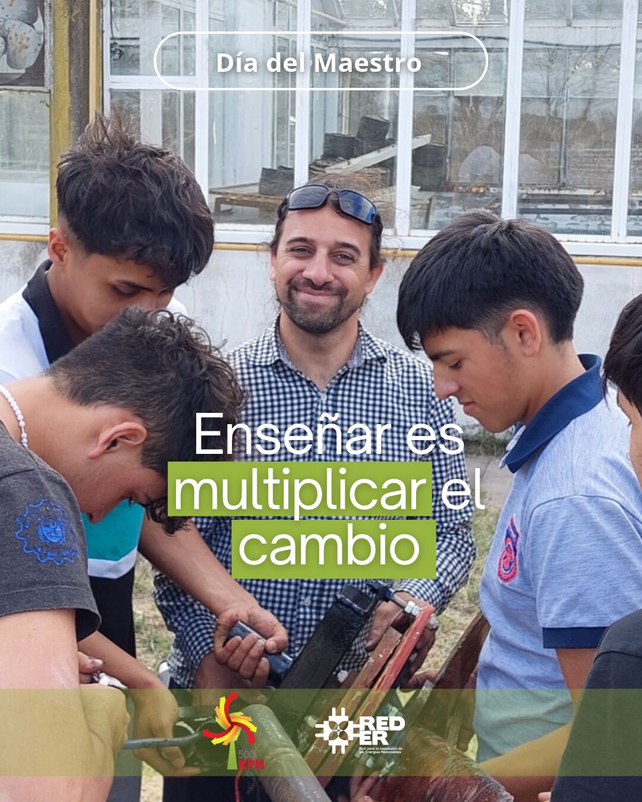

500rpm_eolicaDía del Maestro
En el Día del Maestro, queremos reconocer a las y los docentes que con su compromiso y dedicación inspiran a cientos de jóvenes de escuelas técnicas a diseñar soluciones energéticas más sustentables para sus comunidades.
Su labor demuestra que la educación técnica con enfoque ambiental es clave para transformar realidades y abrir camino hacia un futuro más justo e inclusivo.
Gracias a quienes con su vocación son verdaderos motores de cambio.
#DíaDelMaestro #EducaciónTécnica #TransiciónEnergética #DocentesQueTransforman #500RPM
♡💬➤🔖


 ▶
▶